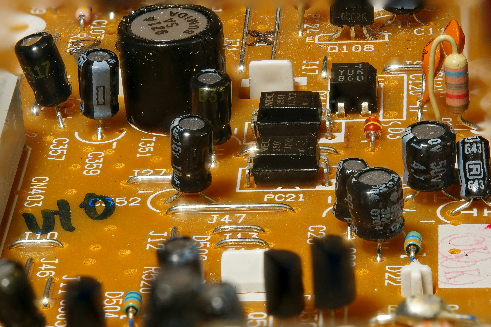

What Are LDO Voltage Regulators?
Low Dropout Regulators (LDOs) are the unsung champions of linear voltage regulation, designed to deliver a steady output voltage even when the input voltage is just a hair above it. That tiny gap—called the dropout voltage—is what sets LDOs apart, making them perfect for scenarios where every millivolt counts. Unlike their switching cousins (looking at you, DC-DC converters), LDOs keep things simple and quiet, producing a clean, low-noise output that’s a dream for sensitive electronics.
Picture this: you’ve got a battery-powered gadget where the voltage is dropping fast, or a precision analogue circuit that hates ripple like a cat hates water. Enter the LDO—efficient, compact, and ready to stabilize your power with minimal fuss. They’re easier to design into your system too, needing fewer external components than switching regulators, and they respond lightning-fast to load changes. Whether it’s a smartphone, a medical sensor, or an audio amp, LDOs are the backbone of reliable, high-quality power.
Types of LDO Voltage Regulators
Standard LDOs
Standard LDOs are your everyday workhorses—reliable, cost-effective, and versatile. With dropout voltages typically between 0.5V and 1V, they’re great for applications where the input voltage has some wiggle room above the output. Think battery-powered wearables or basic microcontroller setups where you need solid performance without breaking the bank.
Ultra-Low Dropout LDOs
When the voltage margin gets razor-thin, ultra-low dropout LDOs step up. These bad boys can regulate with dropout voltages as low as 0.1V, squeezing every last drop of usable power from your source. They’re a lifesaver in portable devices like smartwatches or IoT sensors, where battery life is king and efficiency is non-negotiable.
High PSRR LDOs
High Power Supply Rejection Ratio (PSRR) LDOs are the elite noise-fighters. They shrug off input voltage fluctuations and ripple like it’s nothing, delivering pristine power to noise-sensitive circuits. Audio gear, RF modules, and precision ADCs love these LDOs because they keep the signal pure and the performance top-notch.
Applications of LDO Voltage Regulators
Battery-Powered Devices
In the world of portable electronics, every millivolt matters. LDO regulators are essential for devices that rely on batteries, ensuring stable voltage regulation with minimal power loss.
- Smartphones & Tablets: Regulates power for processors, display drivers, and audio circuits while maximizing efficiency.
- Wearables & Fitness Trackers: Optimized LDOs extend battery life by minimizing dropout voltage and reducing standby power draw.
- IoT Sensors: Enables always-on, ultra-low-power operation for smart home and industrial monitoring systems.
Noise-Sensitive Circuits
Unlike switching regulators that introduce high-frequency noise, LDOs provide a clean, stable voltage output—crucial for sensitive electronic applications.
- Hi-Fi Audio Systems: Ensures distortion-free power delivery for amplifiers and digital-to-analogue converters (DACs).
- RF & Wireless Modules: Stable power regulation for radio transceivers and low-noise amplifiers in communication systems.
- Precision Measurement Equipment: Powers high-resolution ADCs, medical sensors, and lab instrumentation where even minor noise can impact accuracy.
Post-Regulation in Power Systems
Many systems combine switching regulators and LDOs to achieve both high efficiency and low noise. LDOs refine power output, eliminating unwanted ripple.
- Embedded Systems: Cleans up power from DC-DC converters before supplying microcontrollers and logic circuits.
- FPGA & DSP Power Supplies: Provides stable voltage rails to sensitive digital processors.
- Medical Imaging Equipment: Filters power for high-precision scanning devices, ensuring error-free operation.
Precision Systems & Industrial Applications
In mission-critical applications, LDOs ensure consistent voltage regulation, improving reliability and performance in highly sensitive environments.
- Medical Devices: Maintains stable voltage in implantable devices, ECG monitors, and portable diagnostic tools.
- Industrial Automation: Powers high-accuracy sensors used in manufacturing and robotics.
- Lab & Scientific Instruments: Provides ripple-free power for oscilloscopes, spectrometers, and high-precision testing equipment.
Automotive, Aerospace & EV Applications
In automotive and aerospace environments, LDOs provide robust voltage regulation while suppressing EMI interference.
- ADAS & Automotive Sensors: Ensures clean power for radar, LiDAR, and vision-based driver assistance systems.
- Satellite & Avionics Systems: Provides stable voltage for space-grade electronics and communication modules.
- Electric Vehicles: Regulates power in battery management systems, infotainment screens, and advanced onboard computing.
With their ability to deliver clean, stable power across a vast range of applications, LDOs continue to be an integral component in modern electronic designs. Whether you're developing consumer gadgets, industrial automation, or high-reliability aerospace systems, CustomPowerLabs provides custom-tailored LDO solutions to meet your exact requirements.
Benefits of Custom LDO Voltage Regulator Designs
Off-the-shelf LDOs work, but when it comes to optimizing performance, efficiency, and reliability, a custom-designed solution is in a league of its own. Whether you need better power regulation, a more compact footprint, or advanced protection features, a tailored LDO can provide significant advantages over standard regulators.
- Pinpoint Precision – Engineered for Your Exact Needs: Every electronic system has unique power requirements, and a one-size-fits-all LDO can result in energy waste, unnecessary heat dissipation, or performance bottlenecks. With a custom LDO, every parameter—output voltage, dropout voltage, current capacity, transient response, and noise filtering—is designed specifically for your application’s needs. This level of precision ensures that no excess power is lost, extending battery life in portable devices and improving efficiency across all power-sensitive applications.
- Tiny Footprint – Designed for Space-Constrained Devices: In modern electronics, PCB space is at a premium. A custom LDO can be optimized for minimal footprint, allowing it to fit into ultra-compact designs like IoT sensors, medical implants, wearables, and aerospace electronics. By integrating advanced design techniques such as fewer external components, smaller package sizes, and efficient heat dissipation, custom LDOs are perfect for sleek, lightweight, and portable devices without sacrificing performance.
- Loaded with Advanced Features: Standard LDOs may cover basic voltage regulation, but what if you need additional protections or enhanced functionality? Custom LDOs can incorporate soft-start circuits to prevent inrush currents, thermal shutdown protection for overheating scenarios, and current-limiting features to prevent damage during short circuits. Whether you need dynamic voltage scaling, ultra-low quiescent current for energy-efficient standby modes, or intelligent power sequencing, a custom-built LDO ensures your system operates flawlessly under any condition.
- Big Savings at Scale – Cost-Effective for High-Volume Production: While designing a custom LDO may seem like an extra step, it can actually reduce overall system costs in large-scale production. By eliminating unnecessary external components, optimizing board layout, and integrating multiple power management functions into a single package, a tailored LDO can lower both material costs and assembly complexity. This results in higher manufacturing efficiency, reduced bill of materials (BOM) costs, and improved product reliability—making custom designs a smart investment for high-volume production runs.
At CustomPowerLabs, we don’t just design LDOs that meet your requirements—we engineer power solutions that push the boundaries of precision, efficiency, and innovation. Whether you’re working on next-generation consumer electronics, medical devices, industrial automation, or mission-critical aerospace systems, our custom LDOs deliver the stability, performance, and reliability you need to power your innovations.
FAQs About LDO Voltage Regulators
What’s dropout voltage, and why does it matter?
Dropout voltage is the minimum difference required between an LDO’s input and output to maintain proper regulation. If the input voltage falls below this threshold, the regulator can no longer sustain a stable output, potentially causing system instability.
Example: If an LDO has a dropout voltage of 0.3V and you need a 3.3V output, your input voltage must be at least 3.6V for stable operation.
Why it matters: A lower dropout voltage maximizes usable power, extending battery life in wearables, IoT devices, and low-power systems.
How does quiescent current impact my design?
Quiescent current (Iq) is the power the LDO consumes when no load is connected. It plays a key role in energy efficiency, especially in battery-operated devices.
Low Iq LDOs are ideal for:
- Standby electronics like smartwatches and remote sensors.
- Always-on automotive and industrial monitoring systems.
High Iq can cause:
- Unnecessary battery drain, reducing device longevity.
- Increased thermal dissipation, which impacts thermal design.
Tip: For devices spending most of their time in sleep mode, an ultra-low quiescent current LDO ensures power efficiency.
Can I use LDOs in parallel for more current?
Yes, but direct paralleling of LDOs is challenging because they do not naturally share current evenly.
Challenges of paralleling LDOs:
- Unequal current distribution—one LDO may handle most of the load, leading to thermal stress.
- Stability issues—without proper balancing, voltage regulation can become unstable.
Solution: A custom LDO design with integrated load balancing ensures efficient current sharing and optimal reliability.
Why’s PSRR a big deal in LDOs?
Power Supply Rejection Ratio (PSRR) measures how well an LDO suppresses noise from the input power source, ensuring a clean, stable voltage output.
Why it matters:
- Audio Systems: Eliminates unwanted noise for crystal-clear sound.
- RF Circuits: Reduces power interference for stable signal transmission.
- Precision Instruments: Ensures reliable sensor readings in medical and industrial devices.
Tip: If your circuit is highly sensitive to noise, a high-PSRR LDO is essential to maintaining signal integrity.
How do I choose the best LDO for my application?
Choosing the right LDO depends on several key factors, including input voltage, power efficiency, and thermal performance.
Considerations:
- Input Voltage: Must be at least the required output voltage plus the LDO’s dropout voltage.
- Load Current: The LDO should comfortably handle peak power demands.
- Thermal Dissipation: If power loss is high, a thermally efficient package is recommended.
- PSRR Performance: Important for noise-sensitive applications.
Still unsure? We can design the ideal LDO tailored to your needs!
Ready to supercharge your project with a custom LDO? Hit us up for a chat—we’ve got you covered!